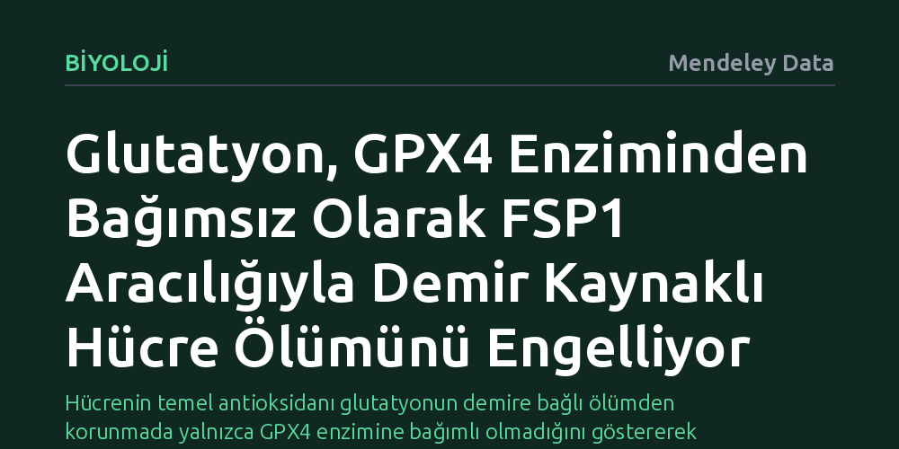

BIYOLOJI · Mendeley Data · 2026-10-08
Araştırmacılar, hücrelerin demir kaynaklı ferroptoz ölümüne karşı glutatyonu bilinen GPX4 enziminden bağımsız kullanıp kullanamadığını inceledi. Çalışma, glutatyonun FSP1 proteini aracılığıyla ubikinonu indirgeyerek ferroptozu durdurduğunu ve doku hasarını belirgin şekilde azalttığını ortaya koydu.
Hücrenin temel antioksidanı glutatyonun demire bağlı ölümden korunmada yalnızca GPX4 enzimine bağımlı olmadığını göstererek yerleşik biyolojik savunma modelini genişletiyor.

Hücrelerimiz yaşamlarını sürdürürken hassas bir biyokimyasal dengeyi korumak zorundadır. Demir, oksijen taşınmasından enerji üretimine kadar birçok hayati süreç için vazgeçilmez bir elementtir; ancak serbest kaldığında hücre zarlarındaki yağları oksitleyerek paslanmaya benzer ölümcül bir zincirleme tepkime başlatabilir. Biyolojide 'ferroptoz' adı verilen bu demir kaynaklı hücre ölümü biçimi, inme, kalp krizi ve organ yetmezliği gibi birçok ağır doku hasarının merkezinde yer alır. Hücrenin bu tehdide karşı en bilinen kalkanı ise glutatyon adlı antioksidan molekül ve onu kullanan GPX4 enzimidir.
Yıllar boyunca bilim dünyasında kabul gören yerleşik model, glutatyonun ferroptoza karşı neredeyse yalnızca GPX4 enziminin bir yakıtı olarak işlev gördüğü yönündeydi. Eğer GPX4 devre dışı kalırsa hücrenin kaçınılmaz olarak ferroptoza sürükleneceği düşünülüyordu. Ancak araştırmacılar, biyolojinin böylesine kritik bir hayatta kalma mekanizmasını tek bir enzimin kaderine bırakıp bırakmadığını sorgulamaya başladı: Glutatyon, GPX4 olmadan da hücreyi bu ölümcül paslanmadan koruyabilir miydi?
Araştırmacılar bu sorunun yanıtını aramak için hücrenin moleküler savunma hatlarını mercek altına aldı. Odak noktalarından biri, son yıllarda ferroptozu engellemede GPX4'e paralel bağımsız bir hat olarak keşfedilen FSP1 (ferroptoz baskılayıcı protein 1) oldu. FSP1 proteininin klasik olarak NAD(P)H molekülünü kullanarak ubikinonu indirgediği ve bu yolla hücre zarlarındaki yağ hasarını önlediği biliniyordu.
Deneylerde araştırmacılar, GPX4 enziminin bulunmadığı koşullarda glutatyonun FSP1 proteiniyle nasıl bir ilişki kurduğunu biyokimyasal düzeyde test etti. FSP1'in bilinen klasik kofaktör yolu haricinde doğrudan glutatyonu bir elektron kaynağı olarak kullanıp kullanamayacağı, ubikinon indirgenme tepkimeleri ve doku hasarı modelleri üzerinden adım adım incelendi.
Elde edilen bulgular, glutatyonun hücre biyolojisinde daha önce bilinmeyen alışılmadık bir işlev üstlendiğini net bir şekilde ortaya koydu. Glutatyon, GPX4 enzimi devrede olmasa dahi hücreyi ferroptoza karşı güçlü bir şekilde korumayı başarıyordu. Bu koruma, FSP1 proteininin glutatyonu doğrudan kullanarak ubikinonu indirgemesi sayesinde gerçekleşiyordu.
Daha da önemlisi, bu yeni mekanizma bilinen NAD(P)H ve FAD ekseninden tamamen bağımsız, ayrı bir kimyasal yol olarak işliyordu. Araştırmacılar, bu FSP1-glutatyon eksenini hedeflediklerinde, ferroptozun yol açtığı doku hasarını laboratuvar modellerinde belirgin biçimde hafifletmeyi başardı. Böylece hücrenin ölümcül lipid peroksidasyonuna karşı elinde düşündüğümüzden daha esnek ve yedekli bir cephane olduğu kanıtlandı.
Bu çalışma, temel biyokimya ders kitaplarında yer alan 'glutatyon ferroptozu yalnızca GPX4 üzerinden engeller' kabulünü esnetiyor. Hücrelerin stres altındayken aynı koruyucu molekülü farklı proteinlerle eşleştirerek alternatif savunma kalkanları kurabilmesi, hücresel uyum yeteneğinin ne kadar zengin olduğunu gösteriyor.
Pratik açıdan bakıldığında, doku kaybının ve organ hasarının önlenmesi hedeflenen durumlarda FSP1-glutatyon ekseni umut verici yeni bir biyolojik hedef sunuyor. Gelecekte inme veya iskemi gibi doku yıkımıyla seyreden tablolarda, yalnızca GPX4'ü değil, bu yeni keşfedilen FSP1-glutatyon hattını da destekleyecek yaklaşımlar araştırılabilir.